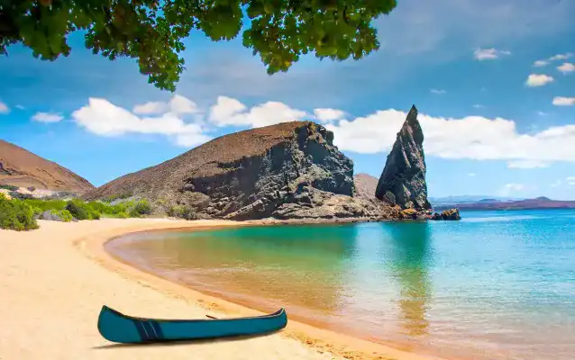
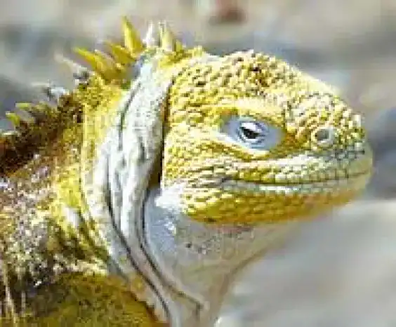

Accueil
Iles Galapagos
Bienvenu aux Iles Galapagos :
Les Iles Galapagos sont situées dans une province de l’Equateur et au Nord-Est de l’océan pacifique. Les Iles ont été découvertes le 10 mars 1535 par les européens plus spécialement par les espagnols. Avec une population de 30 890 d’habitants et une superficie de 8 010km² , les iles Galapagos ont pour capitale Puerto Baquerizo Moreno.
Un air volcanique :
Des volcans sur plusieurs îles différentes comme La Cumbre (1 476 m) , Wolf ( 1 707 m) , Cerro Azul ( 1 640m)…
Plusieurs cantons :
- Isabela avec 1 790 personnes qui habitent dans ce canton et une superficie de 5 368 km²
- San Cristobal avec une population de 6 142 habitants et une superficie de 849km²
- Santa cruz avec une population de 11 264 pour une superficie de 1 794 km²
La faune et la flore :
Il accueille le parc national des Galapagos qui constituent un site du patrimoine mondial de l’UNESCO. Ainsi , dans ce parc qui abrite une faune spécifique et des variétés de reptiles uniques comme des iguanes terrestres , iguane marin , des tortues géantes , des crabes Grapsus grapsus appelés aussi « crabes rouges » , des otaries , des requins marteaux et des poissons.
Un peu de culture :
Le nom Galapagos a été donné à l’astéroïde 16809. Encore plus anciens, dans le dessin animé des Mystérieuses Cités d’or , les Iles Galapagos sont représentées.
Dans un roman, Contes de la Véranda dont l’auteur Herman Melville notamment du livre Moby Dick , fait une grosse référence aux iles suite à une visite de l’archipel.
Le film Master and Commander sorti en 2003 , inclue une scène dont les Iles Galapagos sont filmés avec une visite.